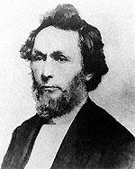

|

|

|
|
|
William Henry Herndon was best known as Abraham Lincoln's law
partner and biographer. He was born on Christmas Day in 1818
in Greensburg, Kentucky and in 1820, his family moved to
Illinois. Herndon attended Illinois College, where he
learned strong antislavery principles. To earn money, he
worked briefly as a clerk in a Springfield store. He rented
the room above the store for living quarters, and shared it
with a number of friends at different times, including
Abraham Lincoln.
Herndon was admitted to the Illinois bar and in 1844
joined Lincoln's law firm. They remained partners until 1861
when President-elect Lincoln left Springfield for
Washington, D.C. Lincoln and Herndon complemented each other
well. Herndon managed the office and provided stability
while Lincoln was for gone months at a time working the law
circuit. They shared similar political convictions. Both
were passionate Whigs, and then Republicans. Both were
pro-temperance, supported federal programs to aid economic
growth, and opposed the expansion of slavery into the
territories. Herndon was one of Lincoln's most enthusiastic
political supporters.
After Lincoln's death in 1865, Herndon's business failed.
Married with eight children, he struggled with alcoholism
and depression. He became obsessed with the idea of writing
a "true" history of Lincoln's life as opposed to the
worshipful biographies so popular at the time. Determined to
publish an accurate representation, he traveled to Kentucky
and Indiana where he recorded numerous oral interviews with
surviving Lincoln relatives and friends. His three-volume
biography, Herndon's Lincoln: The True Story of a Great
Life was published in 1889.
Many people attacked Herndon's Lincoln. Herndon
claimed that Lincoln loved only one woman in his life, Ann
Rutledge. Her early death, according to Herndon, caused
Lincoln's life-long melancholy. Family members, including
Mary Todd Lincoln, denied this story. Other controversies
erupted over Herndon's revelation that Nancy Hanks Lincoln
was illegitimate. Historians have proved this assertion to
be erroneous, and found many other errors as well.
Nevertheless, the collected reminiscences have been
invaluable to generations of Lincoln scholars. Herndon died
on March 18, 1891.
Source: Joan Waugh, ed., Facts on File Encyclopedia of American
History: Civil War and Reconstruction, 1856 to 1869 (New York: Facts on
File, 2003), 166.
|